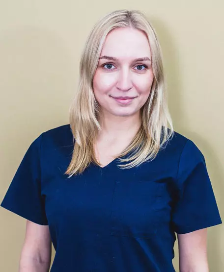

O mnie
Jest pełnym zaangażowania w pracę lekarzem dentystą. Jej przyjazny stosunek do pacjenta, cierpliwość oraz ogromna wiedza teoretyczna szybko znajduje uznanie wśród pacjentów. Absolwentka Śląskiego Uniwersytetu Medycznego na kierunku lekarsko-dentystycznym w Zabrzu. Nagrodzona stypendium Rektora dla najlepszych studentów. Obecnie rozpoczęła studia doktoranckie w Zabrzu na Katedrze Dysfunkcji Narządu Żucia. 
Usługi
- Stomatologia dziecięca
- Leczenie kanałowe
- Stomatologia zachowawcza
- Stomatologia estetyczna
- Leczenie bez bólu
Certyfikaty

"Pani Wiktoria jest wspaniałym lekarzem. Dzięki niej nie boję się wizyt u dentysty!" - Anna K.
Kontakt
Zapraszam do kontaktu!
Nr.tel:
Mail: